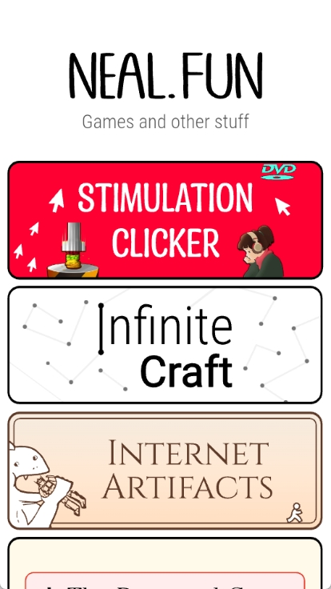
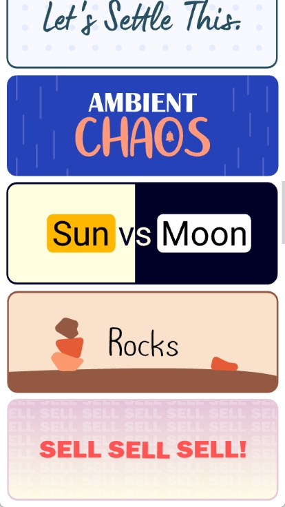

nealfun 新手入门：一个装了 40 多个网页小游戏的 APK，打开就能玩
nealfun 把 neal.fun 上最火的 40 多个网页小游戏打包成了一个安卓 APK——Spend Bill Gates' Money、Perfect Circle、Sun vs Moon、Internet Artifacts……没有账号、没有广告、打开就是卡片列表，点哪个进哪个。这篇带你从下载安装到第一次玩通，五分钟上手。
这篇能带你从完全不懂到把 nealfun 用起来——不需要任何安卓开发经验，甚至不需要你用过 neal.fun 源站。跟着做，五分钟搞定。
它到底是干嘛的？一个手机上的网页小游戏合集
如果把手机比作一间书房，nealfun 就是书房角落那个随手能抽出来的小零食盒——不是正餐，不需要你坐下来花半小时认真对待；但无聊的时候伸手拿一颗，拆开就能吃，吃完觉得有意思再拿一颗。
说正经的：nealfun 是一个把 neal.fun 站上的 40 多个网页小游戏打包而成的安卓 APK。neal.fun 是一位叫 Neal 的开发者做的创意小项目集合，从 2017 年起陆续上线，每一个都不复杂，但总能让人盯着屏幕多玩五分钟。APK 作者把这些网页项目嵌进了一个 App 外壳里，nealfun官网上有完整的项目列表，让你在手机上也能刷着玩。

它的独特之处是零摩擦设计。安装完打开，没有欢迎向导、没有"创建账号"、没有权限请求弹窗——直接就是一排卡片，每张卡片是一个小项目，点哪个进哪个。玩完按返回键回到卡片列表，再点下一张。这不是偷懒，是 Neal 从源站就坚持的理念：打开就能玩，玩完就关掉，你不需要在我这里留下任何痕迹。
五分钟上手：从下载到第一次玩通
别担心，整个过程比你想的简单三步。
第一步：下载 APK 安装包
你需要先拿到 nealfun 的安装包。从官方下载页面，找到最新版本的 APK 文件，点下载就行。文件不大，几十 MB，几秒就能下完。
第二步：安装
下载完找到 APK 文件，点开。如果你的手机是安卓 8.0 以上版本，第一次安装来自浏览器的 APK 可能需要手动允许"未知来源"——系统会弹出一个设置跳转，点进去打开开关，回来重新点安装。整个过程大概十几秒。
第三步：打开玩
安装完成后图标会出现在你的应用抽屉里。点开，直接就是卡片列表。没有登录、没有引导、没有弹窗——这就是它和绝大多数 App 不一样的地方。
随便点一张卡片试试。比如 Spend Bill Gates' Money，进去就是一个购物清单，假设你有 900 亿美元，可以随便买东西。或者 Perfect Circle，一张空白画布让你徒手画个圆，系统给你打分。退出来点 Sun vs Moon，二选一投个票，立刻看到全球数据对比。

就这三步，没有第四步。
上手后先玩这三个功能
新手第一次打开面对 40 多张卡片可能会懵——先玩这三个，保证你玩完就明白 nealfun 为什么让人上瘾。
第一个：Spend Bill Gates' Money——花光 900 亿有多难
点进去你会看到一张购物清单，从一杯 4 美元的咖啡到一枚 550 亿美元的火箭，什么价位都有。右上角实时显示你还剩多少钱。
你会发现什么？真的很难精确花光 900 亿。买 100 万套房子得花 5000 亿，早超了；买 16 艘火箭要 8800 亿，也超。实际操作中几乎没人能精确凑到 0，总会剩个几亿几十亿。
这意味着什么？Neal 做这个项目不是为了好玩，是为了让你对"900 亿到底有多大"有个体感。一杯咖啡 4 美元，全世界 7 亿极端贫困人口一天的生活费可能还买不起这游戏里的一杯咖啡。数字在屏幕上跳动的时候，你第一次对"财富不平等"有了直观感受。
第二个：Perfect Circle——你画的圆没你想的那么圆
点进去就是一张空白画布，用手指画一个你觉得最圆的圆。松手之后系统给你一个 0 到 100 的分数。
你会发现什么？大部分人以为自己能画 90 分，实际平均只有 66 分。Neal 自己在 X 上晒过这个数据。95 分以上系统会在你画的圆上方画一个小金光环——社区里公认的高手标志。
这意味着什么？这就是 neal.fun 的魅力——一个看似毫无意义的小动作，画完立刻有反馈，你忍不住想再试一次，这次说不定能到 90。而且"你画圆得了多少分"成了朋友聚会的小话题，社交货币满分。
第三个：Internet Artifacts——逛一圈 70 年代的互联网博物馆
点进去是一条时间线，从 1977 年到 2007 年，每一年有一个互联网"文物"。比如 1977 年的第一封 ARPANET 邮件、1994 年的早期 eBay 首页、1997 年的 AOL 聊天室界面、2004 年的 Facebook 校园版。
你会发现什么？这不是静态截图展，是能亲手玩的时间胶囊。早期 eBay 页面真的能浏览商品，AOL 聊天室界面真的能输入文字模拟聊天。90 年代上网的老网民看到这些界面会瞬间泪目，00 后会震惊"原来最早的网页长这样"。
这意味着什么？nealfun 里不全是小游戏，还有这种让你停下来静静逛几分钟的东西。Neal 擅长的就是这种"你可能早就知道这个东西存在，但你从来没这样玩过它"的项目。
对了，nealfun 里 40 多个项目每个都有详细玩法说明，懒得一个个试的话，可以先去nealfun文档看看介绍，挑几个感兴趣的再回来玩。
小白的三个常见疑问
从样本文档的 FAQ 里挑三个新手最常问的。
Q：为什么没有账号？我换手机数据不就丢了？
这是故意的设计。nealfun 合集里不存游戏进度——你玩 Spend Bill Gates' Money 买了多少东西、画圆得了多少分，退出就清零了。没有"我的收藏"、没有"最近玩过"、没有"设置偏好"。Neal 的态度很明确：你不需要在我这里留下任何痕迹。想玩了再打开，每次都是新鲜的。
Q：广告多不多？会不会弹个不停？
没有弹窗广告。网页版 neal.fun 只有少量静态 Banner，不是个性化投放。APK 合集里没有加任何广告 SDK——因为不需要账号系统，也就不需要追踪你的行为来卖广告。从隐私角度看这是最干净的设计之一。
Q：我手机里原来存的 neal.fun 网页书签怎么办？
两个可以并存。如果你只玩某几个项目，继续用浏览器书签也挺好；如果你想一次性刷完 40 多个项目、而且经常在没信号的地方玩（虽然网页本身也需要网络），APK 合集会更顺手。两者数据完全独立，不存在互相覆盖的问题。
接下来
玩完这三个，你可以随便点其他卡片了。Sun vs Moon 二选一看看全球投票、Who Was Alive 算算你和哪些名人同年代、Life Checklist 勾一勾人生清单。nealfun 的好处就是每张卡片都不重样，总有一张让你停下来多玩两分钟。
想更深入地玩，比如 Infinite Craft 的合成配方、Who Was Alive 的统计数据怎么来的，去 nealfun 文档站翻一下，那边有更详细的玩法说明。总之，别有压力——这个 App 就是让你"五分钟来五分钟走"的，不用刻意安排时间。
nealfun 系列的源代码和相关资料在三个仓库都能拿到——GitHub上有完整的项目提交历史，Gitee适合国内网络直接访问，GitCode是额外留的一份备份，怕哪个平台哪天抽风上不去。